Практичні курси · журнал «ДентАрт» 2025 №3
Реконструкція верхніх різців за Золотим коефіцієнтом
RECONSTRUCTION OF UPPER INCISORS ACCORDING TO GOLDEN COEFFICIENT
На прикладі клінічного випадку продемонстровано покроковий алгоритм планування реконструкції – закриття трем між верхніми різцями за розрахунком з використанням Золотого коефіцієнта пропорційності і симетричності. За попереднім розрахунком прийнято рішення про збільшення ширини правого ікла на 1,0 мм, тому що тоді при відновленні верхніх різців у пропорційності можна було б уникнути зайвого препарування зубних тканин.
Реставрація верхніх передніх зубів проведена в межах системного відновлення оклюзії, що дозволило відновити всі зуби у первинній анатомічній формі, втраченій через зношування зубів. Реконструкцію провели з урахуванням ширини коронок передніх зубів згідно із Золотим коефіцієнтом. У результаті всі різці були відновлені пропорційними та симетричними, як це передбачено Золотою пропорцією, різниця в ширині коронок верхніх іклів візуально не визначається.
Ключові слова: Золота пропорція, Золотий коефіцієнт, реставрація зубів зі стиранням.
Естетика – це передусім математика!
Симетричні і пропорційні передні зуби – основа гармонії дизайну усмішки, дизайну обличчя людини, і все те, що нам подобається візуально, може бути описано математично. Нас оточують співвідношення Золотої пропорції…
Грецький геній Піфагор Самоський (579–500 до н. е.), який вважав числа богом, що править світом, вирахував магічні числа 1,618 і 0,618, які лежать в основі Золотої пропорції.
Через два тисячоліття італійський математик Лука Пачоллі (1445–1517) описав принцип пропорційності у своїй праці «Сума знань з арифметики, геометрії, вчення про пропорції і пропорційне», виданій у 1494 році, а через 15 років назвав пропорцію Божественною.
У тому ж 1509 році італійський художник і винахідник Леонардо да Вінчі опублікував свій знаменитий малюнок «Гомо Вітрувіані», де принцип Золотої пропорції був застосований до тіла людини, проте його малюнки зубів були далекими від пропорційності…
Принцип Золотої пропорції застосував до зубних рядів як математичну основу візуальної естетики англійський стоматолог Едді Левін, 1978, і його спосіб оцінки пропорційності передніх зубів став популярним у літературі. Докладнішу інформацію можна знайти на його вебсторінці www.goldenmeangauge.co.uk. У цьому способі, як і в сучасному цифровому дизайні усмішки DSD, пропорційність і симетричність визначались у проєкції на фронтальну площину.
Наші пошуки математичної формули пропорційності почалися у 1980-ті роки, коли ми відновлювали композитом травмовані передні зуби у дітей з метою збереження місця в зубному ряду для наступного протезування у постійному прикусі. Втрата контактних поверхонь при переломах коронки зуба у 7–10 років призводила до деформації фронтального секстанта під час прорізування іклів у 10–11 років. Тоді ми і застосували ідею про дотримання пропорційності і симетричності за математичною формулою та використання штангенциркуля для точного визначення клінічної ситуації, проєктування кінцевого результату і контролю під час реставрації. Цей математичний принцип пропорційності та обрахування оптимальної ширини передніх зубів був опублікований у 1993 році і знайшов продовження в клінічній практиці і публікаціях.
Наша ідея полягає в тому, що співвідношення між шириною латерального і центрального різців є константою, відхилення від якої призводить до диспропорції і втрати естетичності. Значення коефіцієнта пропорційності – це співвідношення ширини коронок центрального і латерального різців, де за одиницю взято ширину меншого різця (латерального у верхньому передньому секстанті, центрального – у нижньому).
Поділивши довжину переднього секстанта від ікла до ікла на суму коефіцієнтів пропорційності чотирьох різців, можна в одну дію визначити ширину коронки меншого різця у міліметрах, що відповідає одиниці. Наступною дією можна визначити пропорційну ширину коронки різця більшого розміру, помноживши визначену ширину меншого різця на коефіцієнт пропорційності.
Англійський стоматолог Ірфан Ахмад, познайомившись з нашим розрахунком передніх секстантів зубних рядів з використанням коефіцієнта пропорційності між шириною коронок центральних і латеральних різців, запропонував назвати коефіцієнт Золотим, хоча сам не вірить у можливість математичних теорій в естетичній стоматології.
У чому різниця між Золотою пропорцією і Золотим коефіцієнтом? Золота пропорція описує пропорційність того, що ми бачимо, описує зображення, проєкцію на фронтальну площину.
Але коли ми реставруємо зуби, то бачимо і відтворюємо їх у реальному об'ємі, в 3D, тому для реставрації потрібні розміри коронок зубів, які в зубній дузі створять у проєкції на фронтальну площину зображення, на якому видима ширина зубів буде відповідати числам Золотої пропорції. Іншими словами, Золота пропорція – це 2D, а Золотий коефіцієнт – це 3D! І якщо в основі Золотої пропорції лежать піфагорівські магічні числа 1,618/0,618, то Золотий коефіцієнт дорівнює в ідеалі 1,3 для верхніх різців і 1,1 для нижніх різців.
У клінічному випадку описано, як розрахунок переднього секстанта верхньої зубної дуги з асиметричними тремами допоміг знайти клінічне рішення: для закриття асиметричних трем між верхніми передніми зубами треба збільшити ширину правого ікла, і тоді майбутні контактні пункти будуть краще співпадати з наявними контактними пунктами, щоб уникнути зайвого препарування зубних тканин.
Реконструкція верхніх передніх зубів була проведена як етап системного відновлення зношених зубів.
Верхні і нижні, передні і бічні зуби до реставрації
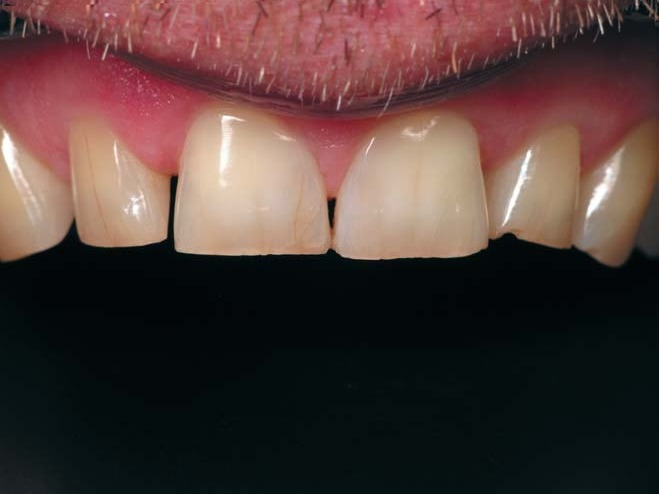
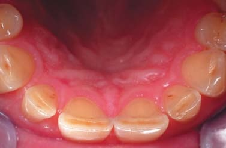
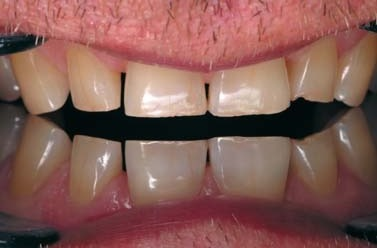
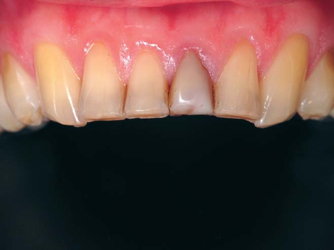
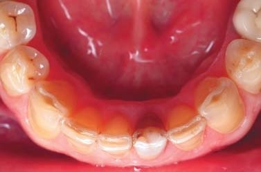
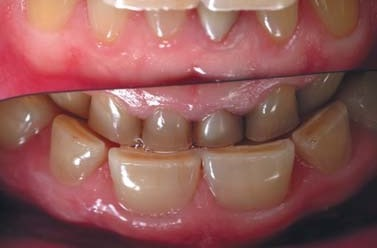
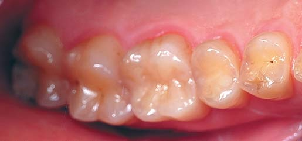
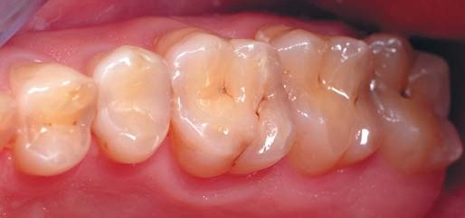
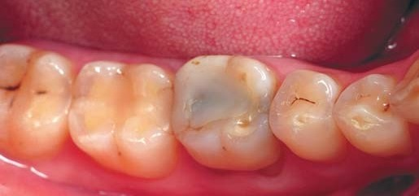
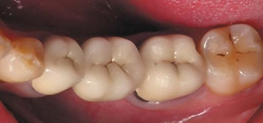
Прикус з трьох боків, позиції оклюзії і флуоресценція
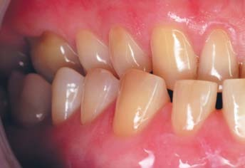
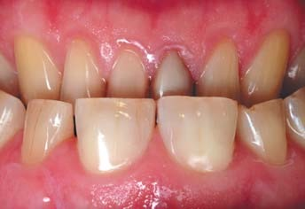
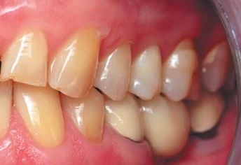
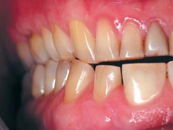
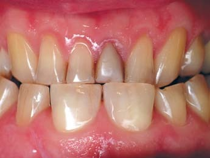
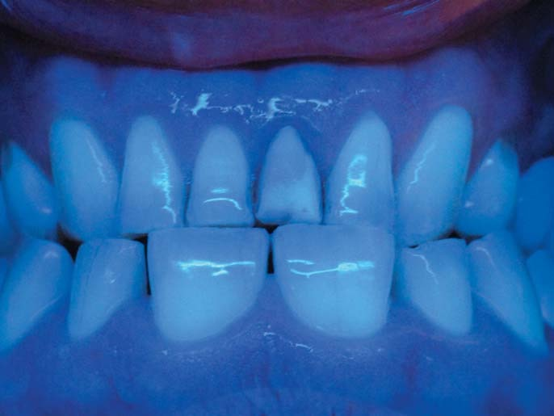
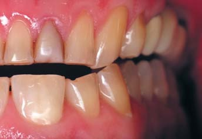
На первинній консультації пацієнта, 47 років, зроблено фотореєстрацію всіх зубів і прикусу. Причиною звернення була заміна керамічної мостоподібної конструкції внизу ліворуч і переліковування нижнього центрального різця, який турбував пацієнта.
Зовнішній огляд виявив ознаки зниження вертикального розміру прикусу через зниження висоти опорних горбиків і наявність відкритого дентину, склерозованого і профарбованого, по ріжучому краю верхніх і нижніх різців та горбиків іклів.
Верхні передні зуби мають зменшену висоту і рівнозначне співвідношення між висотою і шириною коронок, прямокутні куточки зі сколами емалі. Вертикальні профарбовані тріщини на зубах, як і сколи емалі, вказують на наявність вираженого бруксизму.
Між верхніми різцями та іклами праворуч наявні треми, які, однак, не створюють естетичної проблеми для пацієнта.
Оклюзійне дзеркало, встановлене на премолярах, демонструє зменшення висоти коронок верхніх передніх зубів, особливо центральних різців та іклів.
На жувальній поверхні бічних зубів опорні горбики, у порівнянні з направляючими, зменшеної висоти, на багатьох премолярах і молярах видно точково відкритий дентин з відшаруванням емалі і дефекти по шийках зубів. Пломби на нижніх зубах праворуч мають крайове профарбовування, яке є ознакою дебондингу.
Нижні передні зуби також мають відкритий і профарбований дентин по ріжучих краях, зуб 31 змінений у кольорі і потовщений маскувальною реставрацією.
У крайніх позиціях оклюзії (передній, правій і лівій) фіксується множинний контакт верхніх і нижніх зубів у передніх і бічних секстантах через зношування функціонально активних зубів.
В ультрафіолетовому освітленні реставраційний матеріал на зубі 31 мало відрізняється від природної поверхні решти передніх зубів, на яких немає реставрацій.
Розрахунок верхнього переднього секстанта
Визначення довжини фронтального секстанта для різців
Довжину переднього секстанта «від ікла до ікла» визначили 4-ма вимірюваннями штангенциркулем по точках, фіксованих на рівні контактних пунктів, значення в мм – на фото. Ці дані вимірювань внесли у Форму і провели попередній розрахунок, за яким досягнення симетричної пропорційності різців вимагає перенесення центрального контакту праворуч і значного препарування медіальної поверхні зуба 11… Щоб уникнути зайвого препарування, вирішено збільшити ширину зуба 13 на 1 мм для того, щоб майбутні контакти співпадали з наявними.
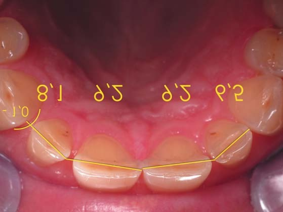
Визначення Золотого коефіцієнта пропорційності верхніх різців
Для розрахунку оптимальної ширини верхніх різців ми завжди спочатку застосовуємо стандартний Золотий коефіцієнт співвідношення ширини центрального і латерального різців – 1,3 (сума – 4,6). Розраховані дані перевіряємо штангенциркулем у зубному ряду, і якщо це потрібно для більш щадного препарування, можемо змінити цей коефіцієнт у межах 1,25–1,35, різницю важко буде визначити візуально. Завдяки збільшенню ширини правого верхнього ікла на 1 мм у цьому випадку не було потреби змінювати значення коефіцієнта, відмінне від стандартного…
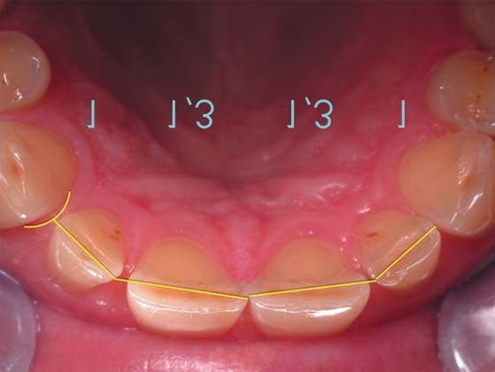
Визначення пропорційної ширини латеральних і центральних різців
Розділивши визначену довжину зубної дуги між іклами 32 мм (зменшену із 33 мм на 1 мм за рахунок правого ікла) на суму коефіцієнтів 4,6 (1 + 1,3 + 1,3 + 1), ми отримали ширину латеральних різців – 6,9 мм. Помноживши ширину латеральних різців на Золотий коефіцієнт 1,3, отримали ширину центральних різців – 9,0 мм. Правильність розрахунку перевірили штангенциркулем у зубному ряду. Визначена ширина кожного з різців дещо більша за стандартну, але всі різці будуть симетричними і пропорційними для цієї довжини зубної дуги «від ікла до ікла».
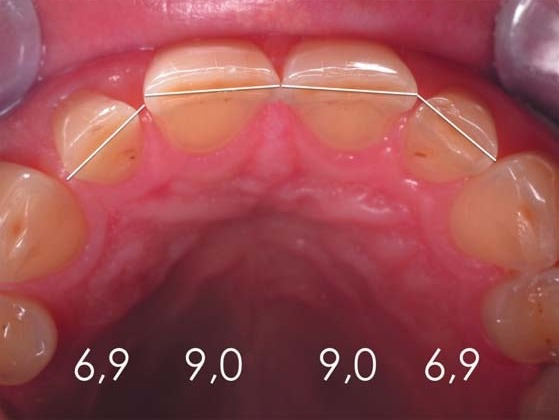
Для внесення даних вимірювань і розрахунку ширини коронок передніх зубів ми використовуємо розроблені нами форми окремо для верхніх і нижніх зубів. Послідовність розрахунку для нижніх передніх зубів інша, і використовується інше значення Золотого коефіцієнта. Форму для верхніх зубів можна завантажити, скориставшись поданим нижче QR-кодом, і роздрукувати для використання на клінічному прийомі.
Отже, після внесених даних пацієнта треба визначити штангенциркулем ширину верхніх передніх зубів, включаючи ікла, приблизно на рівні екватора коронки, який пролягає через контактні пункти. Стоматолог визначає розміри коронок штангенциркулем у зубному ряду, а асистент записує дані у верхній рядок форми, де нижче подана ширина відповідних стандартних зубів для порівняння. Це вимірювання і дані стандартних зубів як системи координат важливі для виявлення можливих причин порушення симетричності і пропорційності в зубному ряду, які призвели до наявності проміжків між зубами або скупченості. Суму ширини різців треба записати праворуч.
Наступним етапом є визначення довжини фронтального секстанта зубної дуги від ікла до ікла, призначеної для чотирьох різців. Стоматолог має зробити чотири вимірювання по будь-яких точках зубної дуги, які можна чітко зафіксувати. Інколи, якщо немає впевненості у правильності, ми вимірюємо зуби повторно у зворотному порядку. Записавши довжину секстанта для 4-х різців, можна визначити точний надлишок простору в дузі при діастемі і тремах або його дефіцит, що призвів до скупченості зубів.
Далі у форму вносяться значення вибраного коефіцієнта пропорційності (Золотого коефіцієнта) для конкретної клінічної ситуації, суми коефіцієнтів 4-х різців, за якими можна визначити оптимальну ширину латеральних і центральних різців.
Отримані результати слід перевірити в зубному ряду, виставивши значення оптимальної ширини різців на штангенциркулі. Переконавшись, що проєктні коронки різців можуть бути, приймаємо отримані значення оптимальної ширини різців для послідовного виконання реконструкції зубів, рухаючись від іклів до центру. До реконструкції референтними точками були медіальні контактні пункти іклів, далі – медіальні контактні пункти латеральних різців, і, нарешті, стали медіальні контактні пункти центральних різців.
За QR-кодом на сторінці оригіналу можна завантажити і роздрукувати Форму розрахунку для використання на своєму клінічному прийомі.
Відновлення правого верхнього ікла
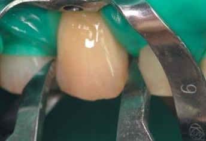
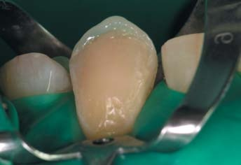
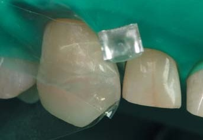
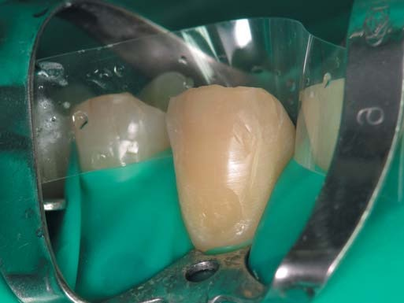
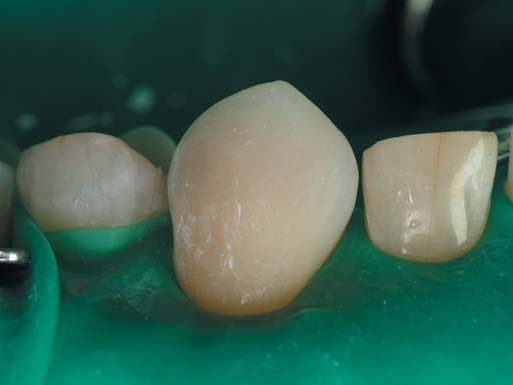
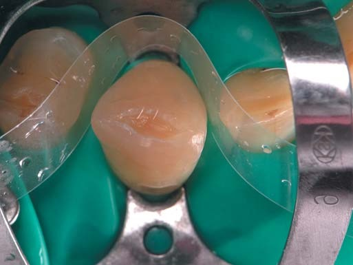
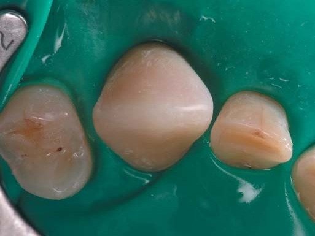
Після очищення поверхні професійною зубною пастою і термінальної анестезії проведено препарування зубних тканин у вільному дизайні під пряму адгезивну реставрацію. Кулястим алмазним бором звичайної зернистості був видалений склерозований і пігментований дентин по вестибулярній поверхні і на горбику глибиною до 1 мм, фінішним бором була скошена крайова емаль: більше по вестибулярній поверхні, менше по оральній.
На фото ліворуч зуб 13 після препарування та ізоляції латексною завісою зі встановленим клампом-метеликом, праворуч зуб 13 після первинного моделювання фінішними борами, коли був знятий кламп і побудована контактна поверхня з використанням індивідуально контурованої лавсанової матриці. Різниця у формі ікла до і після реконструкції неймовірна, і головним було утриматися в потрібній висоті коронки при збільшеній ширині.
Зверніть увагу, що при збільшенні ширини ікла медіально також було переміщено медіально і горбик для збереження співвідношення латерального і медіального скатів коронки у новій ширині.
Фото внизу ілюструють етапи реконструкції: після адгезивної підготовки, після побудови центру та оральної поверхні ікла з урахуванням проєктної ширини коронки і безпосередньо після побудови медіальної контактної поверхні.
Відновлення лівого верхнього ікла
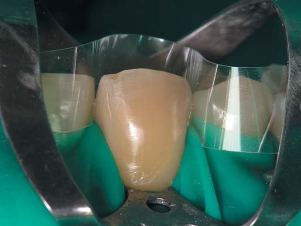
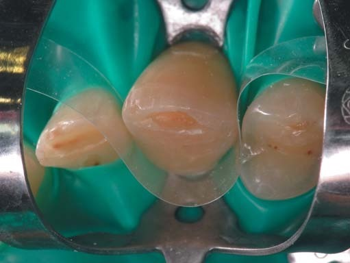
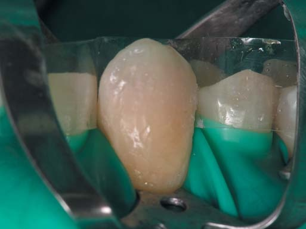
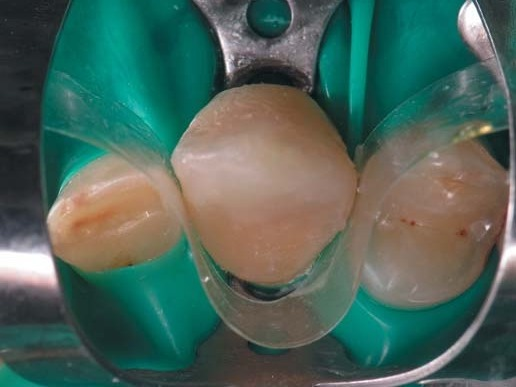
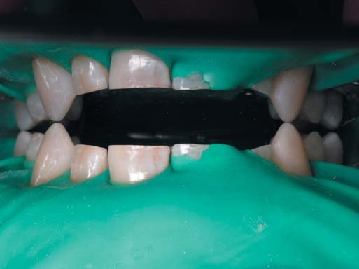
Відновлення верхнього ікла ліворуч, для якого ширина коронки залишилася незмінною, було проведено, орієнтуючись на топографію втрачених зубних тканин. Після адгезивної підготовки, яка включала гідрофобне покриття гібридного шару текучим композитом, опаковим відтінком мікрогібридного композиту відновлений конус дентину в межах втраченого дентино-емалевого з'єднання. Далі жовтим відтінком тіла наногібридного композиту була відновлена основна емаль орально і вестибулярно, і на завершення двома такими ж порціями відновлена поверхнева емаль прозорим відтінком наногібридного композиту.
Щодо дотримання параметрів кута коронки, то горбик ікла має бути розташований на 1 мм медіальніше від середини коронки, визначеної умовною вертикальною лінією. За умови виконання такого правила медіальний скат горбика ікла буде прямим і коротким, а дистальний скат довгим і округлим, що має створити враження про медіальну орієнтацію коронки від шийки до горбика в цілому.
Отриману висоту коронки слід перевірити на симетричність за допомогою штангенциркуля і оклюзійного дзеркала.
Симетричність отриманої висоти відновлених іклів була перевірена за допомогою оклюзійного дзеркала, встановленого на премоляри. Зрозуміло, що зношені премоляри мають меншу висоту від проєктної, але в премолярах зафіксована симетричність верхньої зубної дуги (під час діагностики було перевірено, що оклюзійне дзеркало позиціонується на премолярах та іклах одночасно).
Перевірка в оклюзійному дзеркалі є допоміжною, а основним способом досягнення первинної висоти коронок іклів залишається пошарове відновлення втрачених зубних тканин.
Відновлення верхнього правого латерального різця
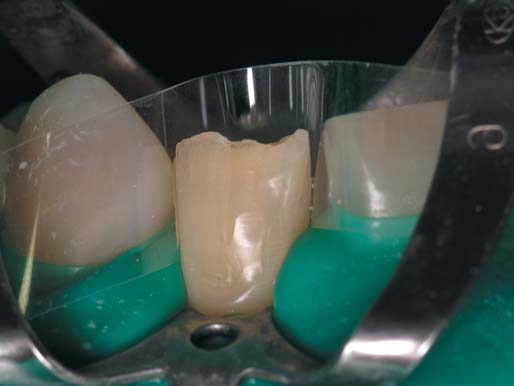
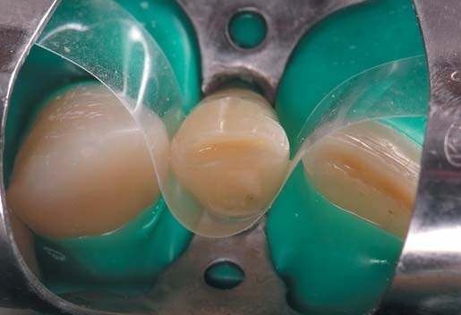
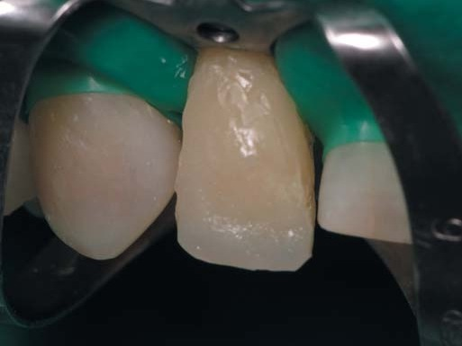
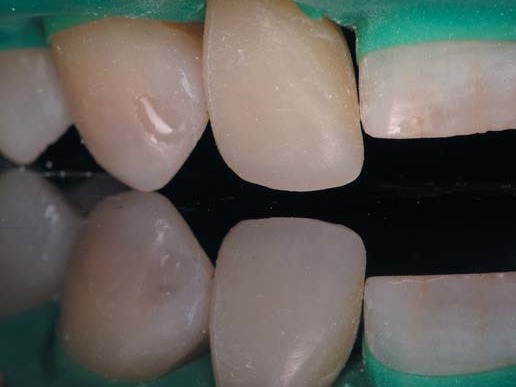
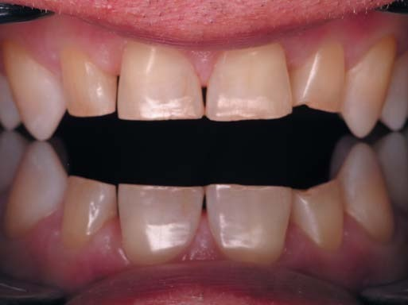
Відбудовані та перевірені на симетричність і висоту коронки верхні ікла стали орієнтирами для відбудови бічних зубів. Спочатку були відбудовані всі зуби бічного секстанта праворуч, потім ліворуч, орієнтуючись на відновлення дентину, емалі та поверхневої емалі у відповідній топографії відновлюваних зубних тканин. Позиція всіх премолярів та іклів у площині перевірена за допомогою оклюзійного дзеркала, і тепер висота коронок різців є фіксованою.
За алгоритмом реставрації передніх зубів «від іклів до центру» наступним етапом має бути відновлення латеральних різців, яке проводиться одноетапно під анестезією та ізоляцією рабердамом.
Препарування зубних тканин, як і при препаруванні іклів, полягало у видаленні склерозованого і пігментованого дентину, скошуванні країв емалі по ріжучому краю з видаленням відшарованих емалевих призм і створенням умов для плавного переходу кольору природної основи в колір реставрації. Обидві контактні поверхні були відпрепаровані металевими і лавсановими абразивними смужками.
Форма коронки зуба 12 відновлена в основному із запасом матеріалу на фінішну обробку. Далі двома композитами (наногібридний і мікрогібридний на шийці з одночасною полімеризацією) була відновлена латеральна контактна поверхня за допомогою індивідуально контурованої лавсанової матриці.
Після механічної обробки латеральної поверхні і перевірки щільності контактного пункту була відбудована медіальна поверхня латерального різця і під контролем штангенциркуля опрацьована ширина коронки до 6,9 мм.
Відновлення верхнього лівого латерального різця
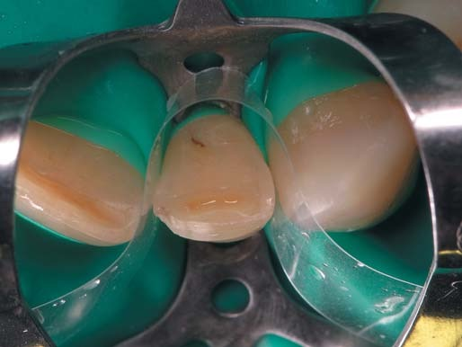
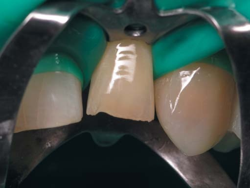
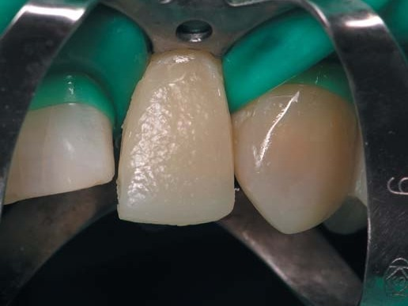
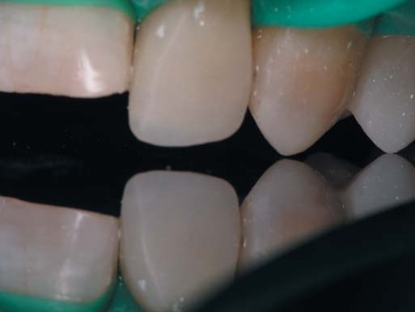
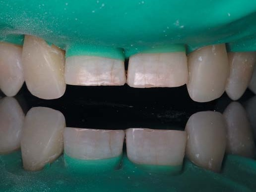
Препарування зубних тканин обох латеральних різців було зроблене до ізоляції системою рабердам. Відновлення коронки лівого латерального різця в основному проведено так само, орієнтуючись на поетапні фотографії відбудови правого різця і топографію зубних тканин – формування однакових шарів застосованих відтінків композиту за площею і товщиною забезпечує досягнення однакового кольору реставрованих зубів, відбудованих послідовно.
Після побудови реставрації в основному був знятий кламп і зроблена перевірка висоти коронки в оклюзійному дзеркалі. Далі композитом відбудована латеральна поверхня, оброблена фінішним бором, металевою абразивною смужкою по випуклій частині контактної поверхні і лавсановою абразивною смужкою по увігнутій частині на переході на шийку зуба. Метою фінішної обробки є як моделювання форми реставрованої частини коронки, так і зняття на контактних поверхнях полімеризованого поверхневого шару, який утворюється в результаті полімеризаційної усадки і полімеризації під матрицею без доступу кисню (без матриці це був би шар композиту, інгібований киснем).
Куточки ріжучого краю змодельовані фінішним бором і абразивним диском на мандрелі після підтвердження в оклюзійному дзеркалі висоти коронок. Форму куточків треба оглянути, дивлячись з різних боків безпосередньо і в оклюзійному дзеркалі, встановленому на премоляри та ікла.
Фото в оклюзійному дзеркалі точно показує втрачену висоту коронок центральних різців у порівнянні з висотою коронок латеральних різців, що важливо для планування топографії шарів композиту.
Відновлення верхніх центральних різців
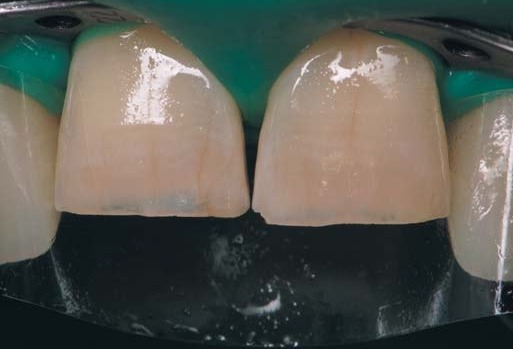
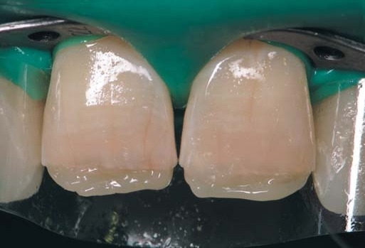
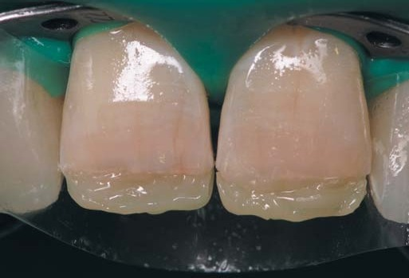
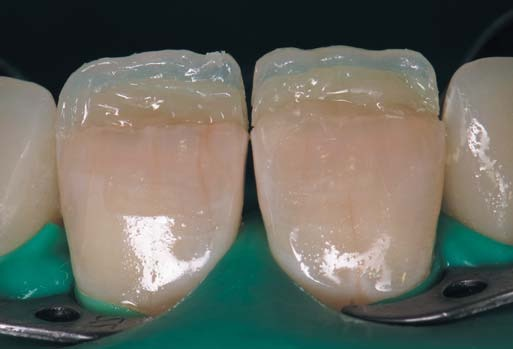
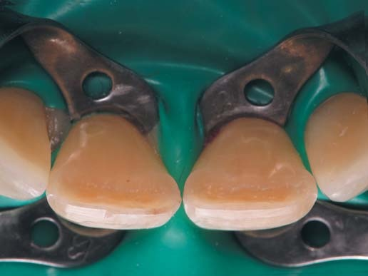
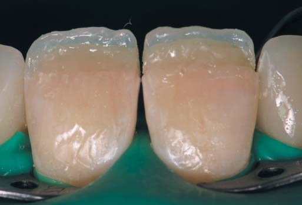
Після перерви зроблено препарування центральних різців, проведені термінальна анестезія та ізоляція рабердамом зубної дуги «від п'ятого до п'ятого». Така ізоляція потрібна, щоб забезпечити оперативний простір для виконання реставрації, на центральні різці накладено клампи для одночасної реставрації обох центральних різців.
Препарування зубних тканин виконано у вільному дизайні в такому ж порядку, як і для іклів та латеральних різців. Вертикальні тріщини не препарували через відсутність їх профарбовування, а інфільтрація адгезивом допоможе уникнути профарбовування тріщин у майбутньому.
Після адгезивної підготовки у техніці тотального протравлювання і з використанням дентинного адгезиву поверхня дентину по ріжучому краю була вкрита тонким шаром текучого композиту для гідрофобної і еластичної ізоляції. Форма дентину відновлена опаковим відтінком мікрогібридного композиту.
Емалевим і прозорим відтінками наногібридного композиту послідовно відновлено оральну поверхню і технічну висоту коронки обох центральних різців. Після внесення кожної порції композит притирали до оральної поверхні емалі кулястим інструментом великого розміру, і це неможливо зробити, якщо використовується силіконовий шаблон.
Для орієнтації по висоті коронки контур дентину ми зазвичай завершуємо на висоті, меншій на 1 мм від ріжучих країв латеральних різців, відтінок основної емалі – на рівні латеральних різців і відтінком прозорої емалі відновлюємо різницю у висоті коронок латеральних і центральних різців.
По вестибулярній поверхні, коли загальна форма коронки вже визначена, проведено уточнення об'ємної форми дентину тим самим опаковим відтінком мікрогібридного композиту. Уже на етапі відновлення дентину були сформовані чотири мамелони.
Відтінком тіла наногібридного композиту мамелони були продовжені до рівня, паралельного ріжучому краю латеральних різців, на скошеному краю емалі залишена невелика сходинка, призначена для прозорого відтінку.
Коронки центральних різців побудовані в основному, і реставрація завершується контактними поверхнями.
Спочатку були послідовно побудовані обидві латеральні контактні поверхні у щільному контакті з медіальними поверхнями латеральних різців. Штангенциркулем перевірено, який із центральних різців на цьому етапі ширший за симетричний, і його медіальна контактна поверхня відновлюється першою, зберігаючи більше простору для внесення композиту на другу контактну поверхню. Штангенциркулем перевірено, що обидва центральні різці, які формують центральну лінію фронтального секстанта, мають однакову ширину.
Фото з оклюзійним дзеркалом потрібні для оцінки вертикальних і горизонтальних амбразур, контуру, просторових співвідношень зубів. Вертикальні амбразури між ними мають бути більшими з вестибулярного боку і мінімальними з орального через розташування різців по дузі. Горизонтальні амбразури, утворені куточками різців і медіальними скатами іклів, мають бути асиметричними, за винятком амбразури між центральними різцями.
Верхні і нижні, передні і бічні зуби після реставрації
Прикус з трьох боків, позиції оклюзії і флуоресценція
Верхні передні зуби мають вигляд симетричних і пропорційних, з правильними вертикальними і горизонтальними амбразурами, ікла і центральні різці у контакті з площиною оклюзійного дзеркала, встановленого на премоляри, а латеральні різці відстають від площини дзеркала.
Бічні зуби відновлені в повній анатомічній формі, включаючи треті моляри, опорні і направляючі горбики визначаються за позицією вершин, тоновані фісури справді виглядають результатом злиття горбиків, а не є намальованими.
Зуб 36 відновлений композитом на абатменті з опорою на імплантаті, коронки зубів 35 і 37 відновлені на корені після ендодонтичного переліковування – так вирішена проблема, через яку і було первинне звернення за стоматологічною допомогою.
Нижні передні зуби симетричні і пропорційні, мають ріжучі краї стандартної товщини. Зуб 31 після ендодонтичного переліковування відновлений на корені у звичних розмірах коронки і ріжучого краю. Колір шийки девітального різця має вигляд дещо світлішого і менш насиченого на відміну від кольору шийок інших різців, які є вітальними.
Зуби в прикусі перебувають у контакті з антагоністами, центральна лінія нижнього зубного ряду видимо зміщена праворуч, великий і малий ключі оклюзії праворуч нейтральні, ліворуч нейтральні з мезіальною тенденцією.
Вертикальний розмір оклюзії відновлений повною мірою у порівнянні з розміром до системного відновлення. Права, передня і ліва позиції оклюзії демонструють функціональну активність.
В ультрафіолетовому світлі природна і штучна поверхні реставрованих зубів демонструють однакову флуоресценцію.
Рекомендовано користуватися денною і нічною захисними капами, які виготовлені для нижнього зубного ряду.
Кілька практичних порад щодо роботи з композитом у прямій реставрації
Завершуючи опис клінічного випадку реконструкції фронтального секстанта верхнього зубного ряду з використанням нашого Золотого коефіцієнта, пропонуємо кілька практичних порад:
- При внесенні композиту дуже важливо заповнити всі нерівності поверхні попередньої порції, наприклад, простір між мамелонами, щоб уникнути потрапляння бульбашок повітря в композит. Для цього між мамелонами ми вносимо маленькі порції композиту для вирівнювання поверхні без полімеризації, потім вносимо основну порцію композиту, притираємо, надаємо потрібну форму і полімеризуємо.
- Кожен шар композиту в реставрації, яка складається з багатьох фрагментів різного кольору і опаковості, варто полімеризувати тільки для фіксації форми протягом 3–5–10 секунд, і лише тоді, коли сумарно складений шар композиту досягне товщини приблизно 2 мм, провести повну полімеризацію композиту протягом 20 с, як це вказано в інструкції. Такий режим полімеризації значно скоротить час на створення складної реставрації і потенційно зменшить полімеризаційні напруження.
- Мікрогібридний композит, на відміну від наногібридного, добре вклеюється, повною мірою взаємодіє з видимим світлом і має еластичність, близьку до дентину. Проте він швидше зношується і втрачає блиск поверхні. Радимо використовувати в реставраційній конструкції мікрогібридний композит для відновлення дентину, коли будуть використані його корисні властивості, а недоліки не матимуть значення, тому що він буде всередині реставрації.
- Наногібридний композит, на відміну від мікрогібридного, має більшу стійкість до зношування і краще утримує блиск поверхні. Проте він погано вклеюється, недостатньо взаємодіє з видимим світлом і має надмірну жорсткість, що призводить до відшарувань під час оклюзійного навантаження реставрованих зубів. Радимо використовувати в реставраційній конструкції наногібридний композит для відновлення тільки емалі, коли композит легше вклеюється на щойно полімеризований мікрогібрид, взаємодія зі світлом не має вирішального значення (у природному зубі головну взаємодію зі світлом забезпечує дентин) і жорсткість композиту не впливатиме на жорсткість конструкції за рахунок товщини емалі.
- Радимо перевірити шліфування поверхні реставрації фінішним силіконовим диском Енхенс без водного охолодження. Ошурки силікону форми Енхенс добре виявляють нерівності поверхні композиту і відкриті бульбашки повітря, роблячи їх білими. Нерівності поверхні можна пришліфувати цим же диском до зникнення білої лінії, а відкриті бульбашки повітря можна заповнити текучим композитом, наприклад SDR, після інфільтрації неполімеризованим адгезивом і без попереднього кислотного протравлювання, якщо ізоляція робочого поля залишається.
Висновки
Проаналізований клінічний випадок реконструкції верхніх різців демонструє, як, виконавши розрахунок фронтального секстанта з використанням нашого Золотого коефіцієнта, можна прийняти обґрунтоване клінічне рішення, одне з можливих, звичайно, яке дозволить покращити естетику верхніх передніх зубів з мінімальним препаруванням зубних тканин.
Естетичний результат закриття асиметричних трем зі створенням симетричного і пропорційного фронтального секстанта, пошук такого клінічного рішення серед можливих варіантів базувався на математичній основі, простій і одночасно ефективній для щоденного використання.
Розрахунок фронтального секстанта верхньої зубної дуги може бути застосованим для планування і виконання будь-якої реставрації, як у прямій реставрації, так і в непрямій або напівпрямій, як у стоматологічному кабінеті, так і в технічній лабораторії.
Розрахунок фронтального секстанта зубної дуги дозволяє:
- виявити відсутність симетричності і пропорційності передніх зубів, навіть коли це не визначається візуально;
- визначити можливі причини відсутності симетричності і пропорційності передніх зубів;
- спланувати варіанти відновлення симетричності і пропорційності передніх зубів;
- відновити симетричність і пропорційність передніх зубів під інструментальним контролем на всіх етапах реабілітації.
Усе, що потрібно мати для досягнення естетичного результату в реконструкції передніх зубів, крім мінімального естетичного і математичного мислення, – це стоматологічний штангенциркуль, форма розрахунку, калькулятор і знання наших Золотих коєфіцієнтів для верхніх і нижніх зубів…
Істинно, естетика – це передусім математика!
Цей клінічний випадок був опублікований у постерній програмі 6-ї Бієнал зустрічі Міжнародної академії адгезивної стоматології, яка відбулась 11–12 липня 2025 року у м. Сіетл (США).
Література
- Радлінський С., Новіков В., Смажило С. Ортопедичні аспекти реставрації зубів композитами // М-ли Респ. наук. конф. Актуальні питання стоматології дитячого віку і ортодонтії. – Полтава, 1993. – С. 118–119.
- Радлинский С. Реконструкция зубного ряда // ДентАрт. – 1997. – № 3. – С. 53–66.
- Радлинский С. В. Финишная отделка реставраций // ДентАрт. – 1998. – № 4. – С. 32–38.
- Радлинский С. Цифровая фотография и биомиметика // ДентАрт. – 2002. – № 4. – С. 30–40.
- Радлинский С. Системное восстановление высоты всех зубов при повышенной стираемости // ДентАрт. – 2007. – № 3. – С. 38–48.
- Радлінський С. Реставрація контактних поверхонь верхніх передніх зубів // ДентАрт. – 2015. – № 1. – С. 18–32.
- Радлінський С. Реставрація за розрахунком: верхні латеральні різці // ДентАрт. – 2022. – № 3. – С. 6–20.
- Ahmad I. Prosthodontics at Glance. – Oxford: Willey-Blackwell, 2012. – P. 57.
- Goldstein Ronald. Esthetics in Dentistry. – London: B. C. Decker Inc., 1998. – P. 228.
- Rufenacht C. R. Fundamentals of Esthetics. – Chicago: Quintessence Publ. Co., 1990. – P. 116–119.